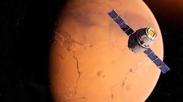
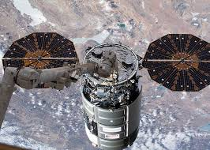
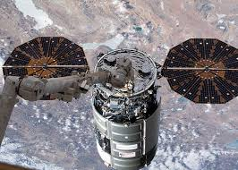

Upcoming Missions
-
Mission 1: Mars 2024
NASA's Mars Exploration Program will focus the next two decades on its science-driven systemic approach on these strategic goals: exploring for potential life, understanding the geology and climate of Mars, and preparation for human exploration.
-
Mission 2: International Space Station Resupply
 

Commercial Resupply Services (CRS) are a series of flights awarded by NASA for the delivery of cargo and supplies to the International Space Station (ISS) Under NASA's commercial resupply services contract, SpaceX delivers critical science, hardware, and supplies to crew aboard the International Space Station